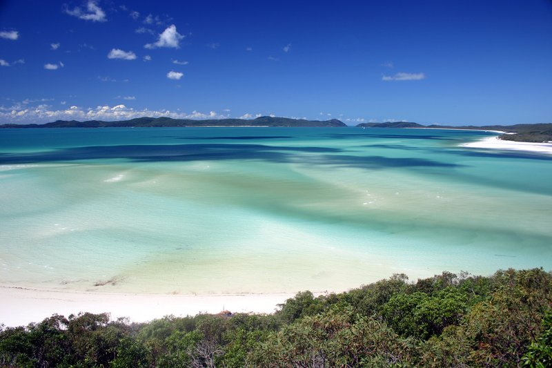
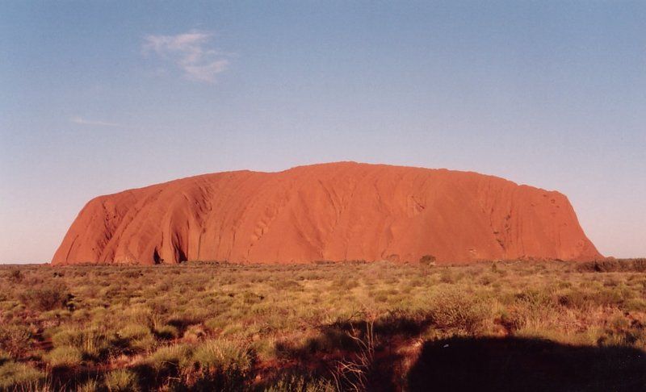
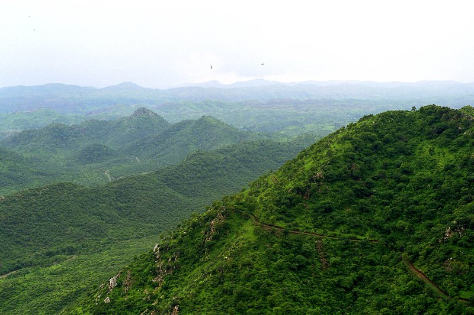
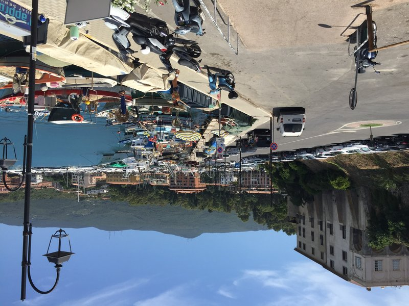
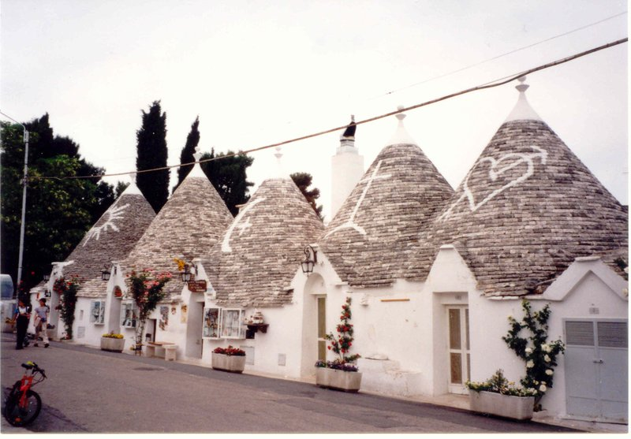
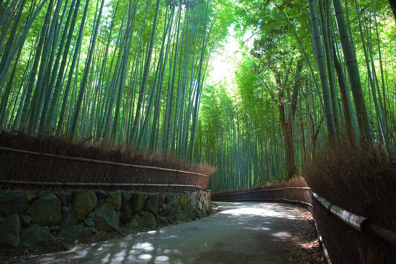
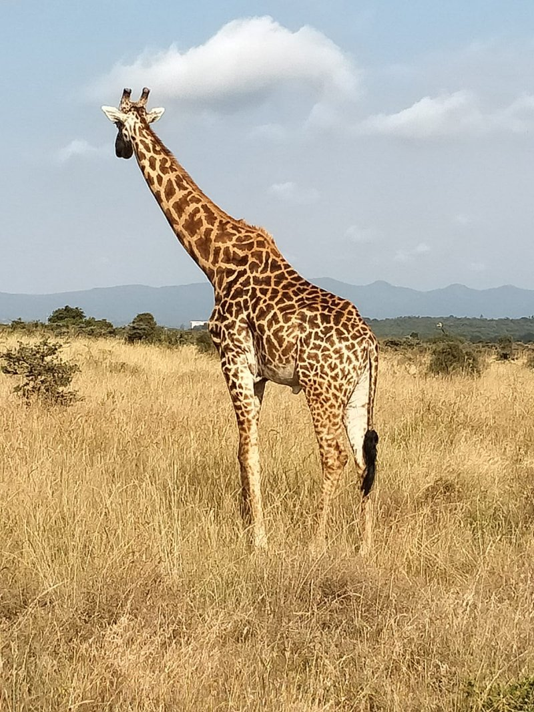
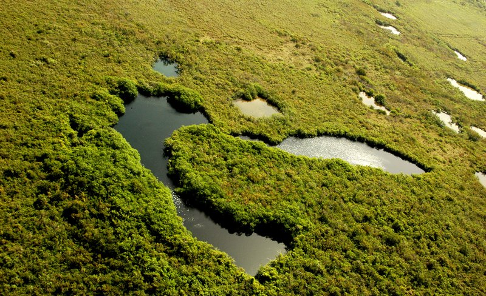
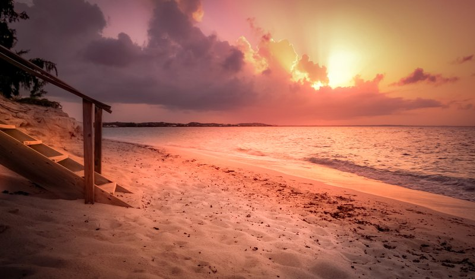
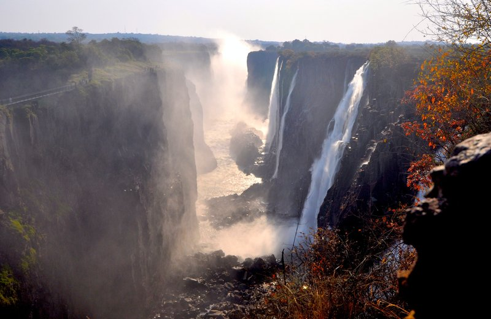

Best Ultra Luxurious Resorts
Anguilla

Malliouhana
Meads Bay, Anguilla
Built on a headland above Meads Bay, Malliouhana was the property that established Anguilla's reputation for serious luxury in the 1980s, when Léon Roydon commissioned it as his own Caribbean residence and then decided to open it as a hotel. Auberge Resorts rebuilt it around two infinity pools that look directly over the sea.
Australia

qualia
Hamilton Island, Queensland, Australia
60 pavilions on the northern tip of Hamilton Island, just across the water from Whitehaven Beach — 98 percent silica sand, among the most photographed beaches in Australia. Opened in 2007, adults-only above 16, with Leeward Pavilions that face west across the Coral Sea so the pool views the sunset directly. The reef visible from the deck is protected as part of the Great Barrier Reef Marine Park.

Longitude 131°
Uluru, Northern Territory, Australia
16 tented pavilions in Australia's Red Centre, each elevated on a platform with Uluru in direct line of sight — the 348-metre sandstone monolith the resort is built to face. Sunrise brings the rock from deep ochre through purple before the sun clears the horizon; the experience reverses at dusk. The site sits inside Kata Tjuta National Park, and overnight access is managed by the Anangu traditional owners.
Bhutan

Amankora
Bhutan
Aman's only multi-lodge circuit covers five valleys in Bhutan — Paro, Thimphu, Punakha, Gangtey and Bumthang — moving guests through the kingdom over days or weeks by mountain road with a dedicated guide and vehicle at each lodge. Bhutan caps total tourism through a government levy, making the allocation to any property as scarce as the properties themselves.
British Virgin Islands

Rosewood Little Dix Bay
Virgin Gorda, British Virgin Islands
On Virgin Gorda, Laurance Rockefeller built this bay into a low-impact nature retreat in 1964 — buildings kept below the tree line, nothing between the room and the beach but a screen door. Queen Elizabeth II and Prince Philip stayed here for the privacy as much as the view; Rosewood rebuilt the property after the 2017 hurricanes without changing that founding restraint.
Costa Rica

Nayara Tented Camp
Arenal, Costa Rica
22 luxury tents in primary rainforest adjacent to the Arenal Volcano, fully inclusive and adults-only, with a raised wood-plank path connecting each tent to the central lodge. The volcano stands directly over the property on clear mornings, and a natural hot spring river runs through the grounds. Nayara's companion resort shares the road, but the Tented Camp operates separately with its own dining and activities.
Fiji

Laucala Island
Laucala Island, Fiji
The entire 3,500-acre island is the resort — 25 villas, each with a private pool, and roughly five staff for every guest. The rate covers everything, from meals grown on the island's own farm to a David McLay Kidd golf course and unlimited diving across the surrounding reef. Closed for a full renovation, reopening in 2027 under COMO.
French Polynesia

The Brando
Tetiaroa, French Polynesia
Marlon Brando bought this atoll in the 1960s after filming Mutiny on the Bounty nearby; the resort that eventually opened on it — 35 villas, each with its own pool, reachable only by a 20-minute private flight from Tahiti — runs on solar power and coconut-oil biofuel. The rate includes everything, across a reef under UNESCO protection since before the hotel existed.
Greece

Canaves Oia Suites
Oia, Santorini, Greece
Cut into the volcanic caldera wall at Oia's northern tip, each suite has its own private terrace with a plunge pool directly over the 300-metre caldera drop — the same view that draws crowds to Oia every evening. The original cliff-carved structure dates to 1936; Canaves expanded it three times without changing the volcanic-rock architecture. The wine bar above the main pool holds close to 400 labels.

Amanzoe
Porto Heli, Peloponnese, Greece
38 pavilions and villas on a hilltop above the Saronic Gulf in the Peloponnese, designed by Kerry Hill as a modern reinterpretation of the classical Greek temple — stone columns, shaded colonnades, a 55-metre pool aligned to face the sea. Epidaurus and Mycenae are within an hour's drive, and the resort operates a private beach club accessible by shuttle boat down the hill.
India

Taj Lake Palace
Udaipur, India
The white marble palace of the Mewar royal family sits on a four-acre island in Lake Pichola, reachable only by boat from the city. Maharana Jagat Singh II commissioned it in 1746 as a pleasure retreat and summer palace. Taj Hotels took over operations in 1963; Octopussy was filmed here in 1983. The boat arrival across the lake, with the City Palace visible on the embankment behind, is unchanged since the palace was built.

Amanbagh
Ajabgarh, Rajasthan, India
40 rooms, suites and pool pavilions inside a walled garden in the Aravalli Hills of Rajasthan, an hour's drive from the ruined ghost city of Abhaneri and its 10th-century Chand Baori stepwell. The compound is enclosed by low stone walls and a central pool runs the length of the courtyard, following the Mughal charbagh garden layout that the architecture is modeled on.
Indonesia

Bvlgari Resort Bali
Bukit Peninsula, Bali, Indonesia
59 villas and five mansions strung along a 160-metre limestone cliff on Bali's Bukit Peninsula, near Uluwatu, every one with its own infinity pool facing the Indian Ocean. The flagship Bvlgari Villa alone runs 1,300 square metres with a 20-metre heated pool cascading into a second pool below it.
Italy

Il Pellicano
Porto Ercole, Tuscany, Italy
51 rooms and suites on the cliffs above the Tyrrhenian Sea at Porto Ercole, on Monte Argentario, opened in 1965 by an American couple who built it as their own private house. The saltwater pool is cut into the rock face directly above the sea, and the restaurant has held a Michelin star since the 1970s. Slim Aarons photographed the terrace for Life magazine; those images still circulate as the defining picture of the Italian Riviera.

Borgo Egnazia
Fasano, Puglia, Italy
A purpose-built Puglian village in the Valle d'Itria — 63 rooms and 92 villas designed to resemble the masserie farmhouses and trulli of the surrounding countryside — that opened in 2010. Italy hosted the 2024 G7 Summit here. The Vair spa covers 2,300 square metres and runs a full olive oil therapy program; the surrounding property produces its own oil from trees on the estate.
Japan

Suiran, a Luxury Collection Hotel
Arashiyama, Kyoto, Japan
39 rooms and suites on the bank of the Oi River in Arashiyama, at Kyoto's western edge, where the Sagano Bamboo Grove begins immediately behind the property. The main ryokan wing dates to 1909; a 100-year-old teahouse was integrated into the structure when Suiran opened in 2015. Boat lantern festivals on the river below are visible from the riverside rooms in summer.

Amanemu
Ise-Shima, Mie, Japan
26 suites and ryokan-style villas on the Ago Bay coast of the Ise-Shima peninsula, each with a private onsen fed from the resort's own thermal source. The architecture follows Japanese shoin design — no Western hotel corridors — and the surrounding nature park encloses one of Japan's most sacred pilgrimage sites, Ise Jingu, within a short drive. Cultured pearl farming has operated in the bay since the 1890s.
Kenya

Angama Mara
Masai Mara, Kenya
32 tented suites on the edge of the Great Rift Valley escarpment, 500 metres above the Masai Mara, at the cliff where Out of Africa was partly filmed. Both tent rows face the entire Mara Triangle below; the annual wildebeest migration passes through the concession between July and October. A darkroom on-site is dedicated to a resident professional photographer who teaches workshops during high season.

Giraffe Manor
Nairobi, Kenya
12 rooms in a 1930s Scottish baronial house in Langata, Nairobi, where a breeding herd of endangered Rothschild's giraffes wanders the grounds and visits breakfast through the dining room windows. Conservationist Jock Leslie-Melville introduced the herd in 1974 after the subspecies had dropped to fewer than 120 individuals in the wild. The fully inclusive rate covers all meals, drinks and game drives.
Maldives

Cheval Blanc Randheli
Noonu Atoll, Maldives
LVMH built this one from scratch across a private cluster of islands in Noonu Atoll, connected by raised wooden walkways, with 46 villas and a dedicated Ambassadeur assigned to each. The spa, run by Guerlain, wraps around a 30-metre infinity pool.

Kudadoo Maldives Private Island
Lhaviyani Atoll, Maldives
Kudadoo built its entire pitch around one idea — Anything, Anytime, Anywhere — meaning the rate genuinely includes everything: a personal chef on call, unlimited spa treatments, a private infinity pool at each of the 15 overwater residences. The island caps out at 30 guests total.

Soneva Jani
Noonu Atoll, Maldives
59 overwater and island villas spread across a 5.6km lagoon in Noonu Atoll, the smallest still larger than most hotels' presidential suites. Every villa has a private pool and a dedicated barefoot butler, plus a retractable bedroom roof and a water slide straight into the lagoon.

Velaa Private Island
Noonu Atoll, Maldives
47 villas in Noonu Atoll, each with a private pool, built around the only golf course in the Maldives — a 9-hole José María Olazábal design — and a snow room for contrast therapy that feels almost absurd this close to the equator. Michelin-trained chef Adeline Grattard runs the kitchens.
Mauritius

One&Only Le Saint Géran
Belle Mare, Mauritius
Opened in 1975 on its own peninsula on the northeast coast of Mauritius, Le Saint Géran was the property that put the island on the luxury travel map before the Indian Ocean circuit existed. One&Only expanded it to 163 suites and villas around a new spa and dive center. The peninsula configuration means lagoon access on both sides; the reef outside it is one of the deepest on the island.
Mexico

Rosewood Mayakoba
Riviera Maya, Mexico
130 suites on 620 acres of coastal jungle and mangrove lagoon on the Riviera Maya, where arrivals at the villa proceed by boat through an interior canal system — the car stops at the main lobby. The resort was built around a Mayan mangrove estuary rather than over it; the canal that connects the villas is the same waterway that existed before construction began. It sits between two cenotes.

Las Ventanas al Paraíso
Los Cabos, Mexico
61 suites on the Sea of Cortez side of the Baja Peninsula, each with a private terrace and a personal concierge whose role includes setting up telescope arrays for whale-watching — grey whales migrate past the property between December and April. The spa operates 24 hours by appointment; the resort introduced the tequila sommelier position to Mexico in 1997.
Morocco

Amanjena
Marrakech, Morocco
40 pavilions and two-storey maisons wrap around a reflecting pool the size of a small lake, set in a walled oasis of centuries-old olive trees just outside Marrakech. The domes and rose-colored walls draw on traditional Moroccan palace architecture, and the hammam spa runs full traditional rituals.

Kasbah Tamadot
Asni, Atlas Mountains, Morocco
Richard Branson spotted this kasbah from a hot air balloon over the Atlas Mountains and opened it as a hotel in 2005; after the 2023 earthquake, it was rebuilt larger, with 42 rooms across the main kasbah, three-bedroom riads and Berber tents pitched in the gardens. Hiking runs straight into the mountains from the property.

Mandarin Oriental, Marrakech
Marrakech, Morocco
There isn't a single hotel room on this 20-hectare estate outside Marrakech — all 61 stays are freestanding villas, each with its own garden and pool, scattered across grounds planted with olive trees and roses with the Atlas Mountains visible in the distance.

The Oberoi, Marrakech
Marrakech, Morocco
84 rooms, suites and villas spread across 28 acres of olive and citrus groves outside Marrakech that predate the hotel by centuries, with private pools attached to 76 of them. The central courtyard was modeled directly on the 14th-century Medersa Ben Youssef across town.
Mozambique

Anantara Bazaruto Island Resort
Bazaruto Archipelago, Mozambique
44 villas on Bazaruto Island, the largest in the archipelago national park off the Mozambique coast, where the surrounding channels hold one of the last viable populations of the endangered dugong. The resort operates within the park boundary, which caps room count and prohibits motorized watersports inside the dugong protection zones. Diving here accesses sites that see fewer than 300 visitors a year.
Saint Barthélemy

Eden Rock
St Jean Bay, Saint Barthélemy
37 rooms, suites and villas built directly onto a rock promontory splitting St Jean Bay in two, founded in the 1950s by the island's own mayor and rebuilt from the ground up after Hurricane Irma. Howard Hughes, Greta Garbo and generations of the Rockefeller family have stayed here.
Saint Lucia

Jade Mountain
Soufrière, Saint Lucia
In Soufrière, on St Lucia's west coast, 24 sanctuaries have a wall deliberately left off each one, so the infinity pool inside your room runs straight out toward the twin volcanic peaks of the Pitons with nothing in between. Every pool is surfaced in one-of-a-kind glass tile, sized and colored differently suite to suite.
Saudi Arabia

Desert Rock Resort
AlUla, Saudi Arabia
54 villas and 10 suites carved into the cliffs of AlUla, near Hegra, Saudi Arabia's first UNESCO World Heritage Site. Cliff-hanging villas and cave suites come with cliffside plunge pools, and the Michelin-starred Nyra serves the property's fine dining.

Nujuma, a Ritz-Carlton Reserve
Red Sea, Saudi Arabia
63 villas on a private island in Saudi Arabia's Red Sea development, accessible only by seaplane or yacht, built around a coral reef that was completely uninhabited before construction began. Every villa has its own pool and a dedicated butler.

The St. Regis Red Sea Resort
Red Sea, Saudi Arabia
90 villas on the same private Red Sea archipelago, every one with its own pool and direct coral reef access, run with the full St. Regis ritual — a dedicated butler for every guest, evening champagne sabering, and a butler-drawn bath on request.
Seychelles

North Island
Seychelles
11 villas on an entire private island, each with its own plunge pool and a staff-to-guest ratio north of 2:1. The rate covers essentially everything — meals built around what you actually want to eat, all drinks, diving, kayaking, laundry — and giant Aldabra tortoises wander the grounds freely.
South Africa

Royal Malewane
Greater Kruger, South Africa
Four lodges and three private villas sit on their own concession inside Greater Kruger, unfenced and contiguous with the national park itself, so wildlife moves through freely. The two Royal Suites run 5,490 square feet each with a private chef and a dedicated game vehicle.

Singita Boulders Lodge
Sabi Sand, South Africa
13 suites on the Sand River inside the Sabi Sand reserve, each with a private heated plunge pool, built around a wine cellar constructed literally around a boulder that couldn't be moved during construction. A dedicated tracker and resident sommelier round out the staff.
Tanzania

andBeyond Mnemba Island
Zanzibar, Tanzania
Off the coast of Zanzibar, 12 open-sided Bandas shaped like the spiral of a nautilus shell sit on an island just 1.5km wide, ringed by one of the healthiest coral reefs in the Indian Ocean. There's no wall between the room and the sea, and green turtles nest on the beach the island shares with guests.
Thailand

Amanpuri
Phuket, Thailand
The first Aman ever built, opened in 1988 on a private headland above Pansea Beach on Phuket, with 83 pavilions and villas that reopened in late 2026 after a full renovation. The larger villas come with a private pool, a live-in housekeeper and a personal chef.
Turks and Caicos

Amanyara
Providenciales, Turks and Caicos
40 pavilions and six villas on the northwest coast of Providenciales, within the Northwest Point Marine National Park, where the reef directly offshore is one of the healthiest in the Caribbean. The architecture is Asian-influenced: a Japanese-style main pavilion, each room elevated on stilts above the scrub, and a 15-metre freshwater reflection pool running the length of the central terrace.

COMO Parrot Cay
Parrot Cay, Turks and Caicos
A 1,000-acre private island north of Providenciales, reachable only by a 35-minute boat from the main island, with 60 rooms, suites and villas on a beach facing open ocean on both sides. The COMO Shambhala spa runs four-day integrated programs built around daily treatments, yoga and nutrition. Bruce Willis, Keith Richards, Donna Karan and Christie Brinkley have all owned residential villas here.
United States

Amangiri
Utah, United States
Thirty-four suites, plus ten tented pavilions at the adjoining Camp Sarika, cut into 900 acres of red-rock desert on Utah's Colorado Plateau, where the concrete architecture is built to disappear against the mesa. The pool wraps around a stone outcrop so the water seems to grow out of the landscape.

Post Ranch Inn
Big Sur, United States
40 rooms perched 1,200 feet above the Pacific in Big Sur, on a former cattle ranch homesteaded in the 1860s, with no televisions and construction designed to disturb as few trees as possible. Peak Houses have curved living roofs planted with grass and wildflowers so they read as part of the hillside from above.
Zambia

Royal Chundu
Upper Zambezi, Zambia
Ten suites across two lodges on a private island in the Upper Zambezi, 25km upstream from Victoria Falls, where hippos graze the banks overnight and elephants move through the surrounding floodplain. Fully inclusive rate covers all meals, sundowner cruises on the Zambezi, guided canoe safaris, village visits and transfers from Livingstone.

Time + Tide Chinzombo
South Luangwa, Zambia
Six villas on the Luangwa River inside South Luangwa National Park, the park that originated the walking safari in the 1950s under Norman Carr. The concession runs walking safaris at all hours — including dawn walks and night drives — through terrain with some of the highest leopard density in Africa. Fully inclusive rate covers all activities, meals and drinks including premium spirits.
Zimbabwe

Singita Pamushana
Malilangwe, Zimbabwe
8 suites on a private 130,000-acre reserve in southeastern Zimbabwe, one of the region's most biodiverse conservation areas, where black rhino, elephant and roan antelope move freely across the property. Everything's included — premium wine, twice-daily game drives, walking safaris.